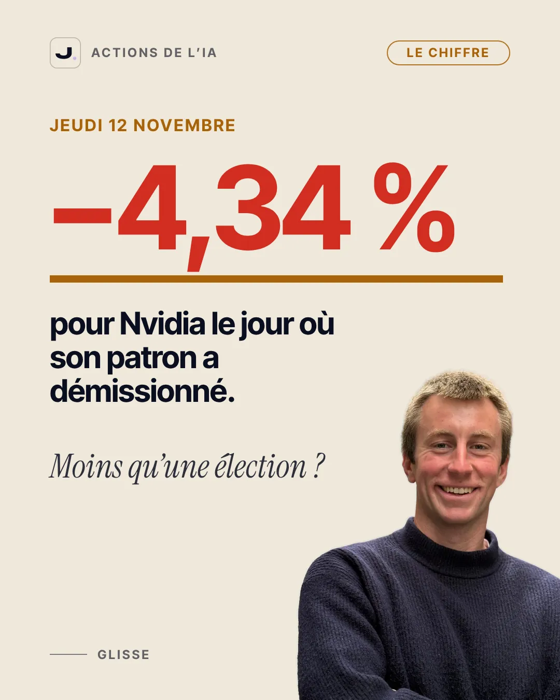
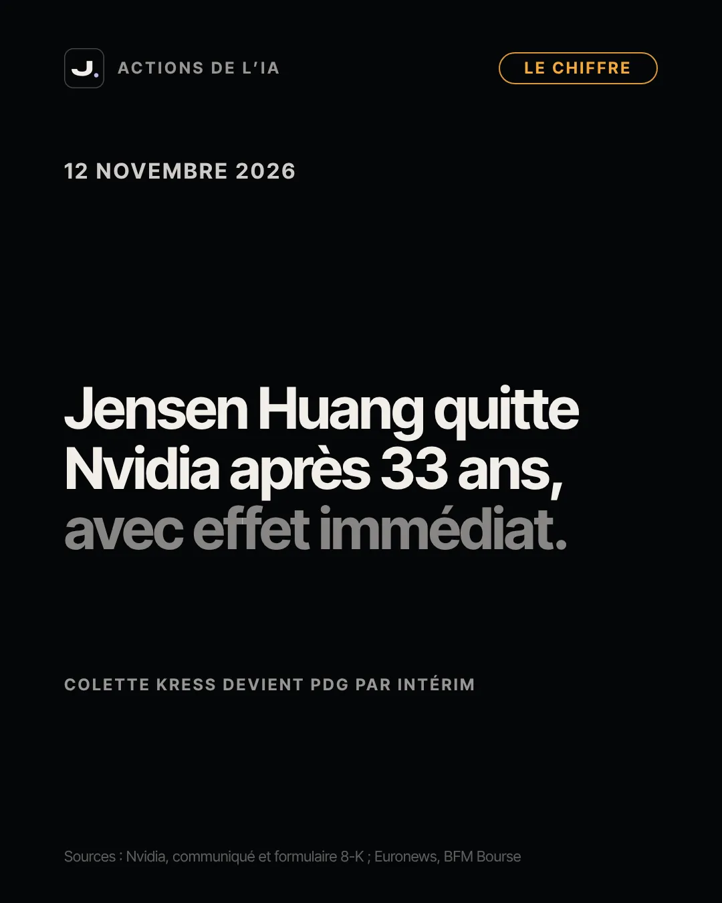
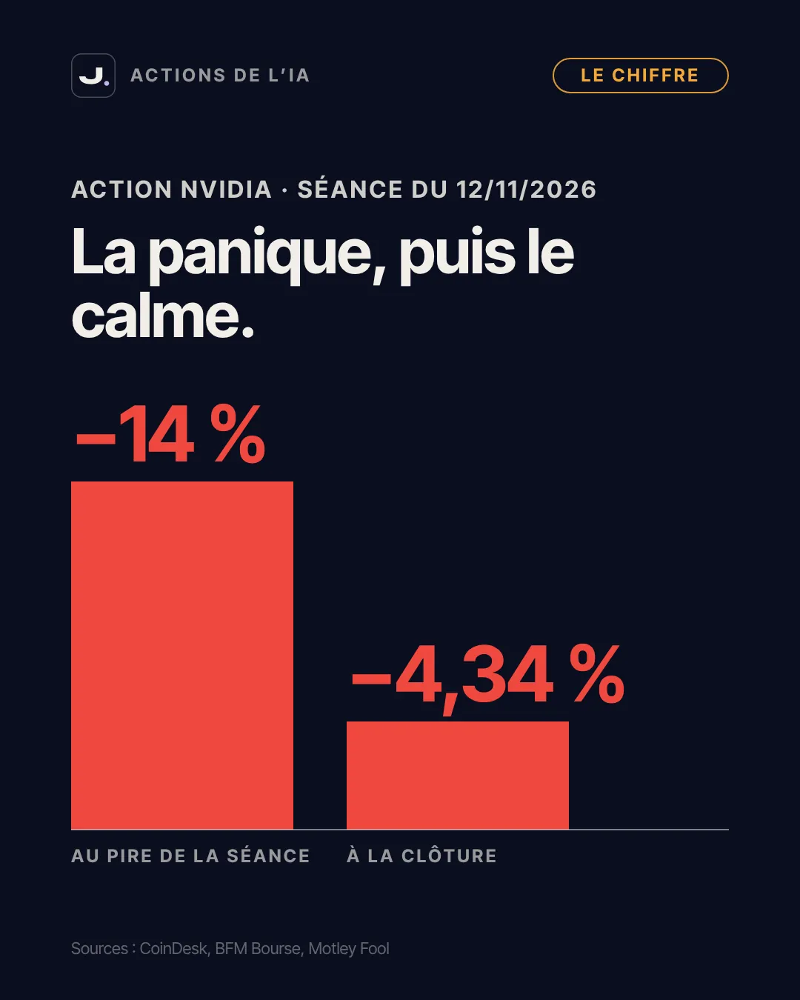
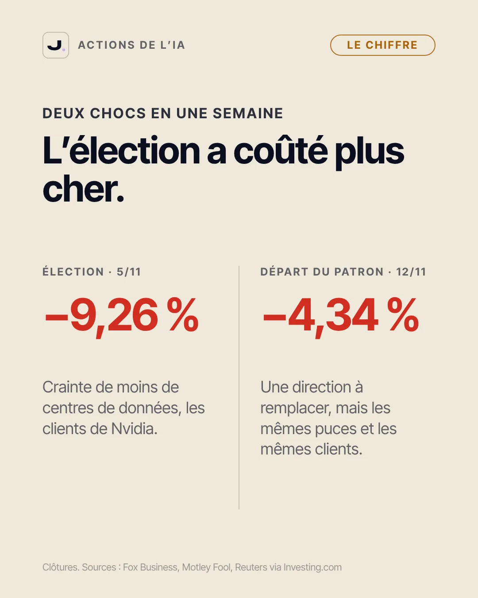
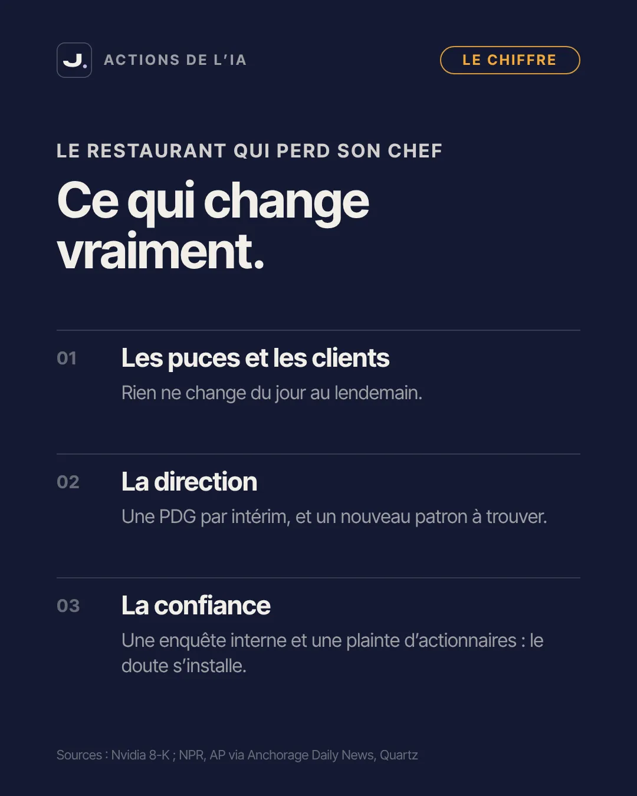
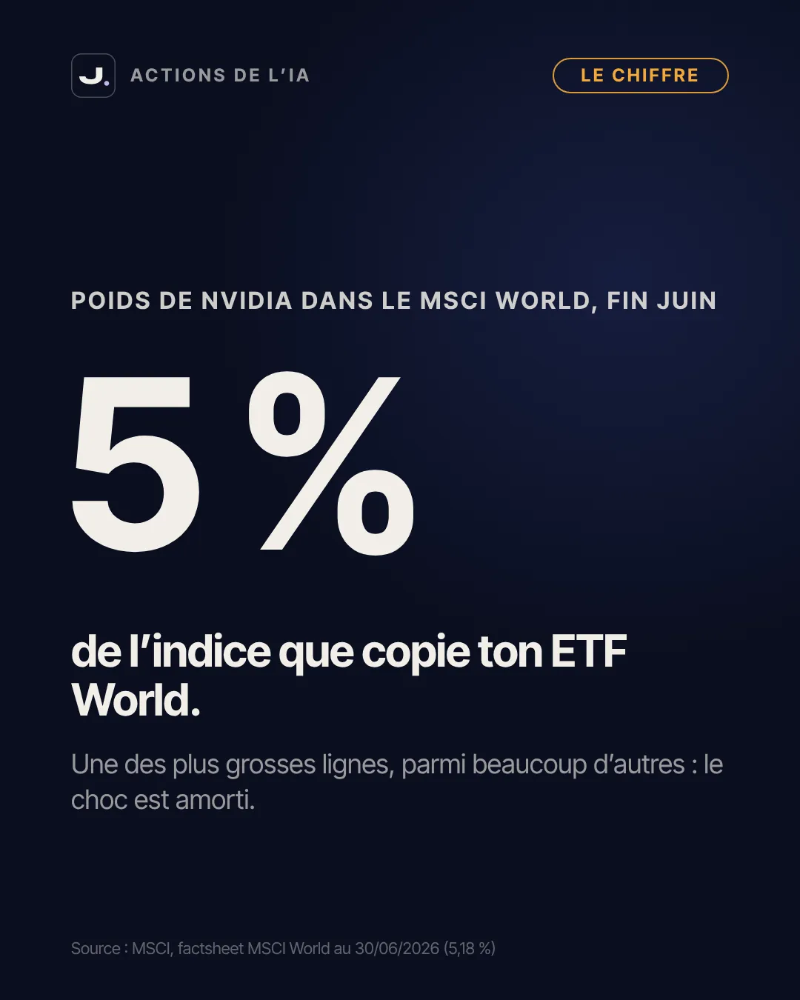

Cet article approfondit mon carrousel de la semaine. Si tu débutes, lis d'abord mon guide sur les ETF Monde : tu verras pourquoi Nvidia se retrouve dans le placement de millions d'épargnants français, souvent sans qu'ils le sachent.

- Ce qui s'est passé chez Nvidia en novembre 2026
- La séance du 12 novembre : la panique, puis le calme
- Pourquoi une élection a coûté plus cher que le départ du patron
- Le mécanisme : un prix est un pari sur les ventes de demain
- Ce que ça change pour toi si tu as un ETF World
- Méthode : comment lire l'annonce du départ d'un dirigeant
- Les erreurs fréquentes face à ce genre d'actualité
- Ce que ces chiffres ne disent pas
- Passer à l'action
- Le carrousel en images
- Questions fréquentes
Ce qui s'est passé chez Nvidia en novembre 2026
Les événements se sont enchaînés en quelques jours. Le 8 novembre, selon la presse, Jensen Huang a adressé aux salariés un e-mail d'excuses portant sur sa vie privée, et le conseil d'administration a ouvert une enquête indépendante le même jour. Le 9 novembre, une plainte collective d'actionnaires a été déposée devant un tribunal fédéral de San José : elle accuse l'entreprise d'avoir trompé les investisseurs, ce qui reste à juger.
Le 12 novembre, Nvidia a annoncé dans un communiqué et dans un formulaire officiel déposé auprès du gendarme boursier américain, la SEC, que Jensen Huang quittait ses fonctions de président, de directeur général et d'administrateur, avec effet immédiat. Colette Kress, directrice financière, devient directrice générale par intérim, et le conseil cherche un successeur, en interne comme à l'extérieur. Harvey C. Jones devient le premier président du conseil d'administration de l'histoire du groupe. Nvidia n'a donné aucune raison officielle à ce départ.
Je ne commente pas ici la vie privée de qui que ce soit, ni les accusations relayées par certains médias, qui ne sont pas prouvées. Ce qui nous intéresse, c'est la réaction du marché, parce qu'elle est riche d'enseignements.
La séance du 12 novembre : la panique, puis le calme
À l'annonce, l'action Nvidia a plongé. Au pire de la journée, elle a perdu jusqu'à 14 %, selon CoinDesk et BFM Bourse. Puis les acheteurs sont revenus, et l'action a clôturé à 166,19 dollars, en baisse de 4,34 %. Cela représente environ 180 milliards de dollars de valeur en Bourse effacés sur la séance, un montant énorme, mais bien loin du pire moment de la journée.
Dans le même temps, plusieurs concurrents comme AMD et Broadcom ont progressé, selon Motley Fool et Boursorama : une partie des investisseurs a simplement déplacé son argent d'une entreprise de puces vers une autre.
Retiens cet écart entre le plus bas de la journée et la clôture. Dans les premières minutes, les investisseurs réagissent au choc. Dans les heures qui suivent, ils se demandent ce que la nouvelle change vraiment pour les bénéfices futurs. Le prix final reflète cette seconde question bien plus que la première.
Pourquoi une élection a coûté plus cher que le départ du patron
Le 5 novembre, deux jours après la victoire des démocrates dans les deux chambres du Congrès américain, l'action Nvidia avait perdu 9,26 % en une séance, soit plus de 440 milliards de dollars, et l'indice Nasdaq avait reculé de 5,52 %. Ce jour-là, l'entreprise n'avait rien annoncé. Selon Reuters et CNBC, les investisseurs craignaient davantage de règles sur l'intelligence artificielle et un ralentissement de la construction des centres de données.
Or ces centres de données sont les clients de Nvidia : ce sont eux qui achètent ses puces. La crainte portait donc directement sur les ventes futures de l'entreprise. Le départ de Jensen Huang, lui, touche la direction et la confiance, mais ne change pas du jour au lendemain les puces vendues, les contrats signés ni les clients. Pour le marché, ce jour-là, la menace sur les clients pesait plus lourd que le changement de patron.
C'est une analyse, pas une loi : rien ne dit que le marché a raison, et la suite peut lui donner tort. Mais cette comparaison illustre parfaitement ce qu'un prix mesure.
Le mécanisme : un prix est un pari sur les ventes de demain
Quand tu achètes une action, tu achètes un petit morceau d'une entreprise, donc un droit sur ses bénéfices futurs. Le prix reflète ce que les acheteurs et les vendeurs pensent, à un instant donné, de ces bénéfices à venir. On parle d'anticipations.
L'image du restaurant
Imagine un restaurant réputé dont le chef s'en va du jour au lendemain. Le soir même, la salle est toujours pleine, les réservations des semaines suivantes ne disparaissent pas, et la brigade en cuisine connaît les recettes. Un restaurant qui perd son chef garde souvent ses clients. En revanche, tout le monde se demande si la qualité va tenir. Si tu voulais racheter ce restaurant, tu demanderais un rabais, mais pas au point de le payer comme une boutique vide.
Maintenant, imagine que la mairie annonce des travaux qui pourraient bloquer la rue pendant des mois. Le chef est toujours là, mais les clients risquent de ne plus venir. Là, la valeur du restaurant baisse beaucoup plus. C'est la différence entre la démission de Jensen Huang et l'élection du 3 novembre.
Le risque homme clé
Les analystes parlent de risque homme clé quand une entreprise dépend fortement d'une personne. Ce risque existe chez Nvidia, dont le fondateur incarnait la stratégie. Il se mesure dans le temps, à la qualité des décisions qui suivront, plus que dans la séance de l'annonce. Pour apprendre à évaluer une entreprise au delà de son dirigeant, lis mon article sur l'analyse fondamentale.
Ce que ça change pour toi si tu as un ETF World
Tu n'as peut-être jamais acheté une action Nvidia. Pourtant, si tu as un ETF World, tu en possèdes un peu. Un ETF World copie l'indice MSCI World, qui regroupe les grandes entreprises des pays développés pondérées selon leur taille en Bourse. Selon la fiche de MSCI au 30 juin 2026, Nvidia pesait environ 5 % de l'indice (5,18 %), au premier rang. Depuis, la baisse de son action a mécaniquement réduit un peu ce poids, mais Nvidia reste une des plus grosses lignes de l'indice.
Concrètement, quand Nvidia baisse de 4,34 %, seule la petite partie de ton ETF investie en Nvidia baisse d'autant. Le reste dépend de toutes les autres entreprises. C'est le principe de la diversification : un choc sur une seule société est amorti par toutes les autres. Il ne disparaît pas pour autant, surtout quand plusieurs géants de la technologie baissent en même temps, comme le 5 novembre.
Si tu veux comparer avec un placement concentré sur les États-Unis, mon article S&P 500 ou MSCI World détaille les différences.
Méthode : comment lire l'annonce du départ d'un dirigeant
Étape 1 : regarde la clôture, pas le plus bas de la journée
Le chiffre le plus spectaculaire est rarement le plus utile. Le 12 novembre, le −14 % a fait les gros titres, mais la séance s'est terminée à −4,34 %.
Étape 2 : demande-toi ce qui change pour les ventes
Les clients, les produits et les contrats sont-ils touchés ? Si la réponse est non à court terme, l'effet sur la valeur reste souvent limité. Si un départ révèle un problème plus profond, comme une fraude ou un produit défaillant, c'est une autre histoire.
Étape 3 : regarde qui reprend la barre
Une direction par intérim connue des investisseurs, ici la directrice financière, rassure plus qu'un vide. La qualité du futur dirigeant comptera davantage que le jour de l'annonce.
Étape 4 : attends les prochains chiffres
Les résultats de Nvidia sont attendus le 17 novembre. Ce sont eux qui diront si le doute se transforme en baisse des ventes. D'ici là, aucune décision précipitée ne s'impose, surtout si tu investis pour des années. Mon article sur l'investissement programmé explique comment lisser ces secousses.
Les erreurs fréquentes face à ce genre d'actualité
- Confondre l'entreprise et son patron. Une entreprise de cette taille repose sur des milliers d'ingénieurs, des clients et des contrats, pas sur une seule personne.
- Vendre au pire moment de la journée. Ceux qui ont vendu à −14 % ont encaissé une perte bien plus forte que ceux qui ont attendu la clôture.
- Croire que 180 milliards sont « partis ». Personne n'a encaissé cette somme : c'est la valeur théorique de toutes les actions au dernier prix échangé qui a baissé.
- Penser que l'affaire est close. Une enquête interne et une plainte d'actionnaires sont en cours : de nouvelles informations peuvent faire bouger le prix.
- Croire qu'un ETF protège de tout. La diversification amortit, elle ne supprime pas le risque.
Pour comprendre ce qui se passe dans ta tête quand les marchés chutent, lis mon article sur la psychologie de l'investisseur.
Ce que ces chiffres ne disent pas
Ces chiffres ne disent pas que Nvidia va bien, ni qu'elle va mal. Une séance ne juge pas une entreprise. La réaction modérée du 12 novembre montre seulement que le marché, ce jour-là, n'a pas vu de menace immédiate sur les ventes.
La comparaison avec le 5 novembre a aussi ses limites. Les deux séances ne partaient pas du même niveau, et une partie du doute sur l'entreprise était peut-être déjà dans le prix : l'enquête interne avait été ouverte le 8 novembre, quatre jours avant l'annonce de la démission. Enfin, la cause du 5 novembre est une interprétation rapportée par la presse financière, pas une certitude.
Quand la conclusion ne s'applique pas : si le départ d'un dirigeant révèle une fraude, des comptes faux ou un produit défaillant, le choc touche directement les ventes et peut être bien plus violent. Et pour une petite entreprise qui dépend vraiment d'une seule personne, le risque homme clé pèse beaucoup plus lourd que pour un géant comme Nvidia.
Passer à l'action
Avant de te demander comment réagir aux secousses du marché, commence par savoir quel investisseur tu es : ton horizon, ta tolérance aux baisses et tes objectifs. Le test gratuit de profil d'investisseur te le dit en quelques minutes.
Si tu veux ensuite détenir un ETF World dans une enveloppe comme le PEA ou un compte titres, il te faut un courtier. Mon comparateur de courtiers t'aide à comparer les frais. Attention, certains liens de cette page sont des liens de parrainage : si tu ouvres un compte par leur intermédiaire, je peux toucher une commission, sans surcoût pour toi. Pour visualiser l'effet du temps sur un placement régulier, essaie aussi le simulateur d'intérêts composés.
Le carrousel en images
Le résumé de cet article en 8 slides, à enregistrer ou à partager.





Un nouveau sujet chaque lundi, vendredi et dimanche : suis la série sur Instagram · TikTok · YouTube.
Questions fréquentes
Pourquoi Jensen Huang a-t-il quitté Nvidia ?
Nvidia n'a donné aucune raison officielle. Selon la presse, le départ du 12 novembre 2026 fait suite à une enquête indépendante du conseil d'administration, ouverte le 8 novembre après un e-mail d'excuses de Jensen Huang aux salariés portant sur sa vie privée.
Qui dirige Nvidia après Jensen Huang ?
Colette Kress, directrice financière, est directrice générale par intérim. Le conseil cherche un successeur permanent, en interne et à l'extérieur. Harvey C. Jones devient le premier président du conseil d'administration de l'histoire du groupe.
De combien l'action Nvidia a-t-elle baissé le 12 novembre 2026 ?
Elle a perdu jusqu'à 14 % pendant la séance, puis a clôturé à 166,19 dollars, en baisse de 4,34 %, soit environ 180 milliards de dollars de valeur en Bourse.
Mon ETF World est-il touché ?
Oui, un peu. Nvidia pesait environ 5 % du MSCI World à fin juin 2026. Seule cette partie de ton ETF suit directement l'action Nvidia, le reste dépend des autres entreprises de l'indice.
Quand Nvidia publie-t-elle ses prochains résultats ?
Le 17 novembre 2026, pour son troisième trimestre fiscal 2027. Ce sera le premier test de l'entreprise après le départ de son fondateur.
Tu veux la méthode complète, pas juste cet article ?
Reçois mon ebook par email : les erreurs qui coûtent le plus cher quand on débute, et la marche à suivre pour les éviter.
- Jensen Huang a quitté Nvidia le 12 novembre 2026, avec effet immédiat, après 33 ans à sa tête ; Colette Kress assure l'intérim.
- L'action a perdu jusqu'à 14 % pendant la journée, puis a clôturé à −4,34 %.
- Une semaine plus tôt, une élection lui avait coûté −9,26 %, soit plus de 440 milliards de dollars.
- Le prix d'une action est un pari sur ses ventes futures : une menace sur les clients pèse plus qu'un changement de patron, tant que les ventes ne sont pas touchées.
- Nvidia est une des plus grosses lignes du MSCI World : ton ETF World est touché, de façon amortie.
Sources
- Nvidia, « NVIDIA Announces CEO Transition », communiqué du 12/11/2026
- Nvidia, formulaire 8-K déposé à la SEC, 12/11/2026
- CoinDesk, « Nvidia shares plunge as Jensen Huang resigns », 12/11/2026
- Motley Fool, « Stock Market Today, Nov. 12 », 12/11/2026
- BFM Bourse, « Jensen Huang quitte l'entreprise qu'il a cofondée », 12/11/2026
- NPR, « Nvidia CEO Jensen Huang steps down », 12/11/2026
- AP via Anchorage Daily News, plainte d'actionnaires contre Nvidia, 10/11/2026
- Fox Business, séance du 5/11/2026 (Nasdaq −5,52 %, Nvidia −9,26 %)
- IndiaInfoline, « Nvidia loses $440 billion as Nasdaq falls 5.52% », 6/11/2026
- CNBC, « Nvidia closes below $4T market cap for first time since July 2025 », 13/11/2026
- MSCI World, poids de Nvidia au 30/06/2026 (5,18 %), repris par Épargnant 3.0
Contenu éducatif, pas un conseil en investissement. Investir comporte un risque de perte en capital ; les performances passées ne préjugent pas des performances futures.
Construis un portefeuille simple et solide
La formation Julien Invest t'apprend à choisir tes ETF, ton enveloppe et ta méthode, pour traverser les secousses du marché sans paniquer.
Découvrir la formation